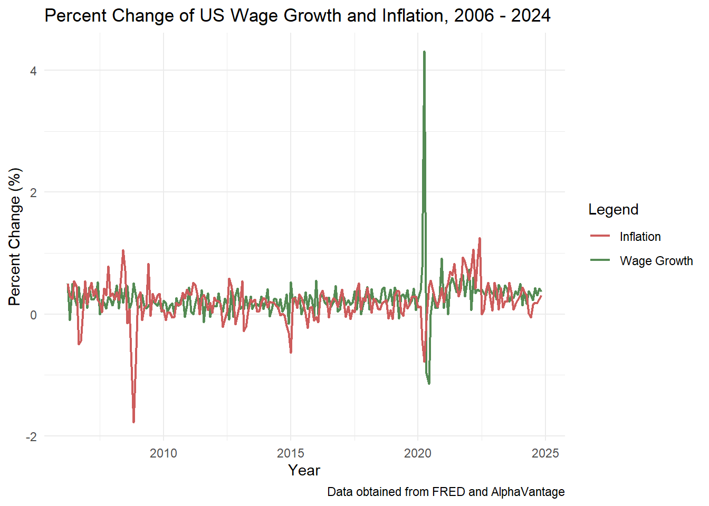
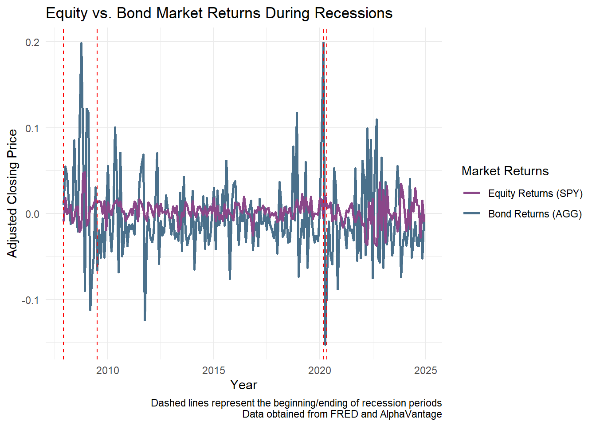
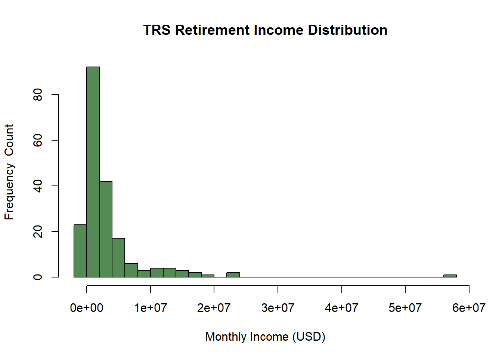

Monte Carlo-Informed Selection of CUNY Retirement Plans
Fatima W. | 12/01/2024
Photo provided by AlphaTradeZone on Pexels Creative Commons usage.
Introduction
Planning for retirement and choosing the right plan is a significant life decision for most workers, and can be challenging at times. The purpose of this project is to create a simulation where new faculty hired at CUNY have 30 days to choose one of two retirement plans:
Teachers Retirement System (TRS)
Optional Retirement Plan (ORP)
We’ll explain more in depth about how these retirement plans work, but the bottom line is that once a choice has been made, the employee cannot change their retirement plan. Because financial forecasting can be difficult to predict, we’ll use historical financial data and a bootstrap inference strategy to estimate the probability that one plan is better than the other.
Retirement Plans Explained
As we’ve mentioned earlier, there are two retirement plans an employee can choose from. For the purposes of this project, we’ll ignore the effect of taxes as both plans offer pre-tax retirement savings, so whichever plan has the greater (nominal, pre-tax) income will also yield the greater (post-tax) take-home amount.
Teachers Retirement System (TRS)
The TRS plan is a traditional pension plan: after retirement, the employer (CUNY) continues to pay employees a fraction of their salary until death. This type of plan is called a “defined-benefit” because the retirement pay (the benefit) is fixed a priori and the employer takes the market risk. If the market under-performs expectations, CUNY has to “pony up” and make up the gap; if the market over-performs expectations, CUNY pockets the excess balance.
Optional Retirement Plan (ORP)
The ORP plan is more similar to a 401(k) plan offered by a private employer. The employee and the employer both make contributions to a retirement account which is then invested in the employee’s choice of mutual funds. Those investments grow “tax-free” until the employee begins to withdraw them upon retirement. If the employee does not use up the funds, they are passed down to that employee’s spouse, children, or other heirs; if the employee uses the funds too quickly and zeros out the account balance, no additional retirement funds are available. Though the employee hopefully still has Social Security retirement benefits and other savings to cover living expenses. This type of plan is called a defined-contribution plan as only the contributions to the retirement account are fixed by contract: the final balance depends on market factors outside of the employee’s control.
Obtain the Data
In this analysis, we’ll be using a variety of datasets obtained from AlphaVantage, a commercial stock market data provider and FRED, the Federal Reserve Economic Data repository maintained by the Federal Reserve Bank of St. Louis. Also please note that APIs are required to obtain data from these sources. We’ll use the following datasets:
US Equity Market from AlphaVantage:us_equity using symbol SPY
By using this database, we’re essentially looking at historical returns of the U.S. equity market as a whole. We may be able to estimate how this portion of your retirement investments might perform.
International Equity Market from AlphaVantage:international_eq using symbol ACWI
Similarly, we’ll use international market return data to see how (international) investments perform.
Bond market from AlphaVantage:bond_returns using symbol AGG
Because bonds are a stable investment to a portfolio, it’s important for retirees to consider this option especially when they typically perform well during market downturns.
Wage Growth from FRED:wage_growth using series CES0500000003
Wage growth is an important factor to consider as well when planning for retirement because of contributions made to retirement accounts (specifically ORP) which are dependent on salary levels.
Inflation from FRED:inflation using series CPIAUCSL
Inflation causes the time value of money (in this case, retirement savings) to decrease, as well as impacting the cost of living (during working years and retirement).
Short Term Debt from FRED:short_term_debt using series DGS2
This dataset contains the return on 2-year US Treasury securities, which are normally considered low-risk, short-term debt instruments.
Click to view code
required_libraries <-c("httr2", "httr", "jsonlite", "dplyr", "tidyr","lubridate", "stringr", "tibble", "purrr", "gt", "ggplot2", "glue", "corrplot")for (pkg in required_libraries) {if (!requireNamespace(pkg, quietly =TRUE)) {install.packages(pkg) }library(pkg, character.only =TRUE)}# Create function to pull necessary datasets from Alpha Vantagealphavantage_key <-readLines("alphavantage_api.txt")alphavantage_key <- alphavantage_key[1]alpha_data_req <-function(symbol, api_key) { base_url <-"https://www.alphavantage.co/query" req <-request(base_url) |>req_url_query(`function`="TIME_SERIES_DAILY", symbol = symbol, apikey = api_key, outputsize ="full",datatype ="json" ) response <- req |>req_perform() data <-fromJSON(response |>resp_body_string()) timeseries <- data[["Time Series (Daily)"]] df <-as.data.frame(do.call(rbind, timeseries)) df$date <-rownames(df)return(df)}# Pull all Alpha Vantage Data & Clean, remember to set all Date columns as date data type# Below are US Equity Returnssymbol <-"SPY"us_equity <-alpha_data_req(symbol, alphavantage_key)rownames(us_equity) =NULLus_equity <- us_equity |>mutate(date =as.Date(date, format ="%Y-%m-%d"))us_equity <- us_equity |>rename(close =`4. close`) |>mutate(close =as.numeric(close), date2 =as.Date(format(date, "%Y-%m-01"))) |>arrange(date2) |>group_by(date2) |>summarize(monthly_return = (last(close) -first(close)) / (first(close)), .groups ="drop") |>select(date2, monthly_return) |>rename(date = date2, us_equity_return = monthly_return)# Below are International Equity Returns symbol <-"ACWI"international_eq <-alpha_data_req(symbol, alphavantage_key)rownames(international_eq) =NULLinternational_eq <- international_eq |>mutate(date =as.Date(date, format ="%Y-%m-%d"))international_eq <- international_eq |>rename(close =`4. close`) |>mutate(close =as.numeric(close),date2 =as.Date(format(date, "%Y-%m-01"))) |>arrange(date) |>group_by(date2) |>summarize(monthly_return = (last(close) -first(close)) / (first(close)), .groups ="drop") |>select(date2, monthly_return) |>rename(date = date2, int_eq_return = monthly_return)# Below are (US) Bonds Returnssymbol <-"AGG"bond_returns <-alpha_data_req(symbol, alphavantage_key)rownames(bond_returns) =NULLbond_returns <- bond_returns |>mutate(date =as.Date(date, format ="%Y-%m-%d"))bond_returns <- bond_returns |>rename(close =`4. close`) |>mutate(close =as.numeric(close),date2 =as.Date(format(date, "%Y-%m-01"))) |>arrange(date) |>group_by(date2) |>summarize(monthly_return = (last(close) -first(close)) / (first(close)), .groups ="drop") |>select(date2, monthly_return) |>rename(date = date2, bond_return = monthly_return)# Create function to pull necessary datasets from FRED datafred_key <-readLines("fred_api.txt")fred_key <- fred_key[1]fred_data_req <-function(series_id) { url <-paste0("https://api.stlouisfed.org/fred/series/observations?","series_id=", series_id,"&api_key=", fred_key,"&file_type=json" ) response <-request(url) |>req_perform() |>resp_body_json(simplifyVector =TRUE) df <-as.data.frame(response$observations) |>mutate(date =ymd(date),value =as.numeric(value) ) |>select(date, value)return(df)}# Below we're pulling Wage Growth: CES0500000003(Average Hourly Earnings of All Employees, Total Private)# We'll do some additional cleaning to make it more usablewage_growth <-fred_data_req("CES0500000003")wage_growth <- wage_growth |>rename(wage_growth_rate = value)wage_growth2 <- wage_growth |>mutate(wage_growth_rate1 = (wage_growth_rate -lag(wage_growth_rate)) /lag(wage_growth_rate) *100) |>select(date, wage_growth_rate1) |>rename(wage_growth_rate = wage_growth_rate1) |>drop_na()# Note that wage_growth dataframe is a collection of hourly wages, and wage_growth2 dataframe is # the rate of change of hourly wages# Below we're pulling Inflation measured by CPI Index: CPIAUCSL(Consumer Price Index for All Urban Consumers: All Items in U.S. City Average (CPIAUCSL)inflation <-fred_data_req("CPIAUCSL")inflation <- inflation |>rename(cpi_index = value)inflation2 <- inflation |>mutate(inflation_rate = (cpi_index -lag(cpi_index)) /lag(cpi_index) *100) |>select(date, inflation_rate) |>drop_na()# Note that inflation dataframe is a collection of cpi indexes, and inflation2 dataframe is # the rate of change of cpi indexes# Lastly we'll pull Short-term debt: DGS2 ( Market Yield on U.S. Treasury Securities at 2-Year Constant Maturity, Quoted on an Investment Basis (DGS2)short_term_debt <-fred_data_req("DGS2")short_term_debt <- short_term_debt |>rename(avg_st_rate = value)short_term_debt <- short_term_debt |>mutate(date2 =format(date, "%Y-%m")) |>group_by(date2) |>summarize(avg_st_rate =mean(avg_st_rate, na.rm =TRUE), .groups ='drop')short_term_debt <- short_term_debt |>mutate(date2 =as.Date(paste0(date2, "-01"))) |>rename(date = date2)
Initial Exploration of Acquired Data
We’ll take a look at our data to draw initial insights and identify key properties. More specifically, we can take a look at the correlation among our key financial factors, as well as their long-term averages.
Click to view code
# We'll take a look at the long-run monthly average value of each series as well since it'll be# needed in further analysis# data for 16 years, so the long-run monthly average would be the average of the monthly # values over these 16 years.# We'll combine our data for simplicity and easecombined_data <- us_equity |>left_join(international_eq, by ="date") |>left_join(bond_returns, by ="date") |>left_join(wage_growth2, by ="date") |>left_join(inflation2, by ="date") |>left_join(short_term_debt, by ="date") |>arrange(date) |>drop_na()longrun_monthly_avg <- combined_data |>ungroup() |>summarize(`US Equity`=round(mean(us_equity_return, na.rm =TRUE), 3), `Int. Equity`=round(mean(int_eq_return, na.rm =TRUE), 3),`Bond Returns`=round(mean(bond_return, na.rm =TRUE), 3),`Wage Growth`=round(mean(wage_growth_rate, na.rm =TRUE), 3),`Inflation`=round(mean(inflation_rate, na.rm =TRUE), 3),`Short Term Debt`=round(mean(avg_st_rate, na.rm =TRUE), 3))longrun_monthly_avg <- longrun_monthly_avg |>pivot_longer(cols =everything(),names_to ="Series",values_to ="Avg Value")longterm_avgs <- longrun_monthly_avg |>gt() |>tab_header(title ="Long-run Monthly Averages",subtitle ="For the years 2008 - 2024"); longterm_avgs
Long-run Monthly Averages
For the years 2008 - 2024
Series
Avg Value
US Equity
-0.005
Int. Equity
0.004
Bond Returns
0.002
Wage Growth
0.257
Inflation
0.198
Short Term Debt
1.446
Shown above are the long-term monthly averages, which will be useful further into our analysis when we create and modify a simulation to project an employee’s pension benefit (TRS) or withdrawal amount (ORP) from retirement until death. We may also find the correlation of our factors below:
Click to view code
# We'll also take a look at the correlation of these variables:# Remove the date columncombined_data_nodate <- combined_data |>select(-date)corr_data <-cor(combined_data_nodate)new_column_names <-c("US Equity", "Intl Equity", "Bond Returns", "Wage Growth", "Inflation Rate", "Short-Term Debt")colnames(corr_data) <- new_column_namesrownames(corr_data) <- new_column_namescorrelation_plot <-corrplot(corr_data, method ="circle",type ="full",col =colorRampPalette(c("red3", "white", "palegreen4"))(200),addCoef.col ="black",number.cex =0.7,tl.col ="black",tl.cex =0.8,cl.cex =0.8,title ="Correlation of Financial Variables Impacting Retirement Funds", mar =c(0, 0, 2, 0))
The green shade indicates a positive correlation whereas the red shade indicates a negative correlation between two variables. Overall, the darker the shade of the circle, the stronger the correlation. We can see that US equity and international equity have a strong indirect relationship, and there’s a slight negative correlation between US equity and bond returns. We may also see that there is a negative correlation between inflation rates and wage growth rates, which we can visualize below:
Click to view code
# Let's see what insights we can derive from our data# I'm interested to see how the percent changes differ between inflation (CPI) and wage growthwage_growth_percent <- wage_growth |>filter(date >=2006-03) |>mutate(wage_percent_change = (wage_growth_rate -lag(wage_growth_rate))/lag(wage_growth_rate) *100) |>drop_na() |>select(date, wage_percent_change)|>mutate(date =as.Date(paste0(date, "-01")))inflation_percent <- inflation |>filter(date >=2006-03) |>mutate(inflation_percent_change = (cpi_index -lag(cpi_index))/lag(cpi_index) *100) |>drop_na() |>select(date, inflation_percent_change) |>mutate(date =as.Date(paste0(date, "-01")))wage_inflation <- wage_growth_percent |>left_join(inflation_percent, join_by("date"=="date"))plot_wage_inflation_changes <-ggplot(wage_inflation, aes(x = date)) +geom_line(aes(y = wage_percent_change, color ="Wage Growth"), linewidth =0.85) +geom_line(aes(y = inflation_percent_change, color ="Inflation"), linewidth =0.85) +labs(title ="Percent Change of US Wage Growth and Inflation, 2006 - 2024",x ="Year",y ="Percent Change (%)",caption ="Data obtained from FRED and AlphaVantage",color ="Legend") +theme_minimal() +scale_color_manual(values =c("Wage Growth"="palegreen4", "Inflation"="indianred")); plot_wage_inflation_changes

Looking at how hourly wages fluctuate with inflation helps to provide insights into whether wages are keeping up with the cost of living, which is also crucial for understanding purchasing power and economic well-being. For the most part, it seems that rates of inflation increases, so does the rate of change of hourly wages. We can especially see the hike in wage percentage increasing around 2020. One more important event I’d like to analyze are the bond market returns during recession periods in the US, specifically the Great Recession that lasted from December 2007 to June 2009, and the COVID-19 economic recession that lasted just two months, from March 2020 to April 2020. Shown below, we can see that the returns for bonds were significant during periods of economic recession, which is expected since treasury bonds are commonly deemed “safe” during these periods as they are backed by the US government.
Click to view code
# Let's also take a look at the bond market returns during recession periods in the USus_equity_recession <- us_equity |>filter(date >="2007-11-30")bond_returns_recession <- bond_returns |>filter(date >="2007-11-30")equity_bond_recession <- us_equity_recession |>left_join(bond_returns_recession, by ="date")# glimpse(equity_bond_recession)recession_plot <-ggplot(equity_bond_recession, aes(x = date)) +geom_line(aes(y = us_equity_return, color ="Equity Returns"), linewidth =1) +geom_line(aes(y = bond_return, color ="Bond Returns"), linewidth =1) +geom_vline(xintercept =as.Date("2007-11-30"), linetype ="dashed", color ="red") +geom_vline(xintercept =as.Date("2009-06-30"), linetype ="dashed", color ="red") +geom_vline(xintercept =as.Date("2020-02-29"), linetype ="dashed", color ="red") +geom_vline(xintercept =as.Date("2020-04-30"), linetype ="dashed", color ="red") +labs(title ="Equity vs. Bond Market Returns During Recessions",x ="Year",y ="Adjusted Closing Price",caption ="Dashed lines represent the beginning/ending of recession periods Data obtained from FRED and AlphaVantage",color ="Market Returns") +theme_minimal() +scale_color_manual(values =c("Equity Returns"="skyblue4", "Bond Returns"="orchid4"), labels =c("Equity Returns (SPY)", "Bond Returns (AGG)")); recession_plot

Historical Comparison of TRS and ORP
We’ll now move forward in performing a historical comparison of TRS and ORP. Given our data, we’ll implement the following TRS and ORP formulas and compare the value of each plan for the first month of retirement. For purposes of this project, we’ll assume our hypothetical employee joined CUNY in the first month of our historical data (March 2008) and retired from CUNY at the end of the final month of our data (October 2024). We’ll set their starting annual salary to $57,000, assuming the employee is starting out as an assistant professor. The formulas for TRS and ORP will be applied as follows:
TRS The retirement benefit is calculated based on the Final Average Salary (FAS)of the employee, which is computed based on the final three years salary.
If N is the number of years served, the annual retirement benefit is:
1.67% x FAS x N if N < 20
1.75% x FAS x N if N = 20
(35% + 2% x (N - 20)) x FAS if N > 20
Additionally, the benefit is increased annually by 50% of the CPI, rounded up to the nearest tenth of a percent: e.g., a CPI of 2.9% gives an inflation adjustment of 1.5%. The benefit is capped below at 1% and above at 3%, so a CPI of 10% leads to a 3% inflation adjustment while a CPI of 0% leads to a 1% inflation adjustment.
ORP We’ll assume that the ORP participants invest in a Fidelity Freedom Fund with the following asset allocation: Age 25 to Age 49: - 54% US Equities - 36% International Equities - 10% Bonds
Age 50 to Age 59: - 47% US Equities - 32% International Equities - 21% Bonds
Age 60 to Age 74: - 34% US Equities - 23% International Equities - 43% Bonds
Age 75 or older: - 19% US Equities - 13% International Equities - 62% Bonds - 6% Short-Term Debt
Under the ORP, both the employee and the employer make monthly contributions to the employee’s ORP account. These contributions are calculated as a percentage of the employee’s annual salary. Specifically, the employee contributes at the same rate as the TRS:
$45,000 or less: 3%
$45,001 to $55,000: 3.5%
$55,001 to $75,000: 4.5%
$75,001 to $100,000: 5.75%
$100,001 or more: 6%
The employer contribution is fixed at: - 8% for the first seven years of employment at CUNY. - 10% for all years thereafter.
Click to view code
# Task 5# Our data is from 2008 to 2024 (16 years of service). We'll also assume that the person is# starting out as an assistant professor#******************************** TRS Plan *****************************************# First we'll make a function to adjust salary for wage growth and inflation changesadjust_salary <-function(salary, wg_rate, inflation_rate) { salary * (1+ wg_rate + inflation_rate)}# We'll create a function to calc the final avg salary (FAS) by calc the mean of the last 3 salariesfas_calc <-function(salaries) {mean(tail(salaries, 3))}# Now we'll create a function to calc the pension given the FAS and total years workedpension_calc <-function(fas, worked_years) {if(worked_years <20) {return(0.0167* fas * worked_years) } elseif(worked_years ==20) {return(0.0175* fas * worked_years) } else {return((0.35+0.02* (worked_years -20)) * fas) }}# Finally we'll have a function to calc the TRS monthly pensiontrs_calc <-function(starting_salary, combined_data, worked_years) { salary <- starting_salary salaries <-numeric(worked_years)for (x in1:worked_years) { inflation_rate <- combined_data$inflation_rate[x %%nrow(combined_data) +1] /100 wg_rate <- combined_data$wage_growth_rate[x %%nrow(combined_data) +1] /100 salary <-adjust_salary(salary, wg_rate, inflation_rate) salaries[x] <- salary } final_avg_sal <-fas_calc(salaries) pension <-pension_calc(final_avg_sal, worked_years) monthly_pension <- pension/12return(monthly_pension)}starting_salary <-57000total_years_worked <-16retirement_age <-60# Now calculate the monthly penion for TRStrs_monthly_pension <-trs_calc(starting_salary = starting_salary,combined_data = combined_data,worked_years = total_years_worked)trs_monthly_pension <-round(trs_monthly_pension, 2)#******************************** OPR Plan *****************************************# Function to select the contribution rate given the salaryorp_contrib_rate <-function(salary) {if(salary <=45000) {return(0.03) } elseif (salary <=55000) {return(0.035) } elseif (salary <=75000) {return(0.045) } elseif (salary <=100000) {return(0.0575) } else {return(0.06) }}# Now we make a function to calc market returns given (us) equity returns and bond returnsmarket_return_calc <-function(us_equity_return, int_equity_return, bond_return) {return(0.54* us_equity_return +0.36* int_equity_return +0.10* bond_return)}# Define a function to hold the account balance orp_acc_balance <-function(acc_balance, market_return, tot_contrib) { acc_balance * (1+ market_return) + tot_contrib}# Define the function to calc the ORP monthly pensioncalc_orp_pension <-function(starting_salary, combined_data, worked_years, employer_contrib_rate =0.08, withdrawal_rate =0.04) { salary <- starting_salary acc_balance <-0for (y in1:worked_years) { wg_rate <- combined_data$wage_growth_rate[y] /100 us_equity_return <- combined_data$us_equity_return[y] /100 int_equity_return <- combined_data$int_eq_return[y] /100 bond_return <- combined_data$bond_return[y] /100 inflation_rate <- combined_data$inflation_rate[y] /100 salary <-adjust_salary(salary, wg_rate, inflation_rate) employee_contrib_rate <-orp_contrib_rate(salary) employee_contrib <- salary * employee_contrib_rate employer_contrib <- salary * employer_contrib_rate total_contrib <- employee_contrib + employer_contrib market_return <-market_return_calc(us_equity_return, int_equity_return, bond_return) acc_balance <-orp_acc_balance(acc_balance, market_return, total_contrib) } monthly_withdrawl_orp <- (acc_balance * withdrawal_rate) /12return(monthly_withdrawl_orp)}orp_monthly_income <-calc_orp_pension(starting_salary = starting_salary,combined_data = combined_data,worked_years = total_years_worked,employer_contrib_rate =0.08,withdrawal_rate =0.04); orp_monthly_income <-round(orp_monthly_income, 2)results <-glue("Under the TRS plan, the first month of retirement provides the retired employee with ${trs_monthly_pension}. Under the ORP plan, the first month of retirement provides the retired employee with ${orp_monthly_income[1]}.")print(results)
Under the TRS plan, the first month of retirement provides the retired employee with $1320.32.
Under the ORP plan, the first month of retirement provides the retired employee with $393.51.
When comparing both plans, we can see that the TRS plan provides the employee with nearly $1,000 more in the first month of retirement compared to that of the ORP plan.
Long-Term Average Analysis
Now that we have done an initial historical comparison of TRS and ORP, we understand that the “first month of retirement” dollar value is interesting, but it arguably undersells a key strength of the TRS. The TRS guarantees income for life, while the ORP can be exhausted if the employee lives a very long time in retirement. We’ll modify our previous simulation to project an employee’s pension benefit (TRS) or withdrawal amount (ORP) from retirement until death. For our purpose, we’ll determine the employee’s death age to be 82. We’ll also implement cost of living adjustments (COLA) for TRS and future market returns for ORP, using the long-run averages we computed previously.
Click to view code
#*************************Task 6: Long-Term Average Analysis: TRS vs. ORP*********************************# Setting parameters:retirement_age =60death_age =82inflation_avg =0.197market_avg_return = (0.04)# We'll first project an employee’s pension benefit (TRS), make sure to include +1 to include# the employee's final year of retirement# also remember the TRS plan specifies that COLA adjustments are based on 50% of the average # inflation rate but capped at 3%trs_projection <-function(monthly_pension, retirement_age, death_age, inflation_avg) { monthly_income <-numeric(death_age - retirement_age) current_income <- monthly_pensionfor (year in1:(death_age - retirement_age)) { monthly_income[year] <- current_income current_income <- current_income * (1+min(0.03, (0.50* inflation_avg))) } avg_income <-mean(monthly_income)return(list(monthly_income = monthly_income,avg_income = avg_income ))}# Create function to project withdrawal amount (ORP) from retirement until deathorp_projection <-function(start_balance, retirement_age, death_age, withdrawl_rate, market_avg_return) { remainder_bal <- start_balance monthly_income <-numeric(death_age - retirement_age) depletion <-NAfor(year in1:(death_age - retirement_age)) { annual_wd <- remainder_bal * withdrawl_rate monthly_income[year] <- annual_wd /12 remainder_bal <- (remainder_bal - annual_wd) * (1+ market_avg_return)if (remainder_bal <=0) {if (is.na(depletion)) { depletion <- retirement_age + year } remainder_bal <-0 } }return(list(monthly_income = monthly_income, avg_income =mean(monthly_income), depletion = depletion, remainder_bal = remainder_bal))}# TRS Projectiontrs_result <-trs_projection(monthly_pension = trs_monthly_pension,retirement_age = retirement_age,death_age = death_age,inflation_avg = inflation_avg)# ORP Projectionorp_result <-orp_projection(start_balance = orp_monthly_income *12/0.04,retirement_age = retirement_age,death_age = death_age,withdrawl_rate =0.04,market_avg_return = market_avg_return)# Display the resultsretirement_period <-60:81mon_income_trs <- trs_result$monthly_incomemon_income_orp <- orp_result$monthly_incomemon_income_compare <-data.frame(Age = retirement_period,TRS = mon_income_trs,ORP = mon_income_orp)trs_vs_orp <- mon_income_compare |>gt() |>tab_header(title ="Avg. Monthly Income of TRS and ORP",subtitle ="Pension/Withdrawal For Retirement Years 60 to 81") |>cols_label(Age ="Age",TRS ="TRS Monthly Income",ORP ="ORP Monthly Income") |>fmt_currency(columns =c("TRS", "ORP"), currency ="USD")trs_vs_orp
Avg. Monthly Income of TRS and ORP
Pension/Withdrawal For Retirement Years 60 to 81
Age
TRS Monthly Income
ORP Monthly Income
60
$1,320.32
$393.51
61
$1,359.93
$392.88
62
$1,400.73
$392.25
63
$1,442.75
$391.62
64
$1,486.03
$391.00
65
$1,530.61
$390.37
66
$1,576.53
$389.75
67
$1,623.83
$389.12
68
$1,672.54
$388.50
69
$1,722.72
$387.88
70
$1,774.40
$387.26
71
$1,827.63
$386.64
72
$1,882.46
$386.02
73
$1,938.93
$385.40
74
$1,997.10
$384.79
75
$2,057.02
$384.17
76
$2,118.73
$383.56
77
$2,182.29
$382.94
78
$2,247.76
$382.33
79
$2,315.19
$381.72
80
$2,384.64
$381.11
81
$2,456.18
$380.50
Shown above, we can see the average monthly income for TRS versus ORP, and we may also notice that the employee will not run out of funds before death and will have funds to leave to heirs.
Bootstrap (Monte Carlo) Comparison
Given that we’ve implemented both the “while working” contributions and returns (ORP) only as well as the “while retired” benefits of both plans, we are finally ready to implement our Monte Carlo assessment. We’ll generate at least 200 “bootstrap histories” for our Monte Carlo analysis to calculate values for both the “while working” and “while retired” periods of the model.
Click to view code
#*************************************Task 7: Monte Carlo Analysis*************************************************# We no longer need to assume constant long-term average values for the retirement predictions # any more. So we'll set up some parameters to be used in the bootstrap resampling. Recall that# this sample employee is working from age 28 to 60 (32 years), and will # retire/passaway from 60 to 85 (25 years).set.seed(1989)n_bootstrap <-200years_working <-32years_retired <-25withdrawal_rate <-0.04# Create the bootstrap samplesbootstrap_samples <-lapply(1:n_bootstrap, function(idx) {list(working_period =sample_n(combined_data, years_working, replace =TRUE),retire_period =sample_n(combined_data, years_retired, replace =TRUE) )})# Function for asset allocation: Fidelity Freedom Fund asset allocations based on ageget_asset_allocation <-function(age) {if (age <=49) {return(c(0.54, 0.36, 0.10)) } elseif (age <=59) {return(c(0.47, 0.32, 0.21)) } elseif (age <=74) {return(c(0.34, 0.23, 0.43)) } else {return(c(0.19, 0.13, 0.62)) }}# Create the function to calculate TRS pension benefitstrs_bootstrap_calc <-function(working_data) { salaries <-cumprod(c(57000, 1+ working_data$wage_growth_rate)) fas <-mean(tail(salaries, 3)) n <-nrow(working_data)if (n <20) { trs_benefit <-0.0167* fas * n } elseif (n ==20) { trs_benefit <-0.0176* fas * n } else { trs_benefit <- (0.35+0.02* (n -20)) * fas }return(trs_benefit /12)}# Create function to calculate ORP benefitsorp_bootstrap_simmulation <-function(working_data, retirement_data, withdrawal_rate) { investment <-0# Working period simulationfor (j in1:nrow(working_data)) { age <-28+ j -1 salaries <-cumprod(c(57000, 1+ working_data$wage_growth_rate)) salary <- salaries[j] annual_contrib <- salary *0.045+ salary *ifelse(age <=34, 0.08, 0.10) allocation <-get_asset_allocation(age) annual_return <-sum(allocation *c( working_data$us_equity_return[j], working_data$int_eq_return[j], working_data$bond_return[j] )) investment <- (investment + annual_contrib) * (1+ annual_return) }# Retirement period simulation monthly_withdrawal <- (investment * withdrawal_rate) /12for (j in1:nrow(retirement_data)) { age <-60+ j -1if (investment <0) break allocation <-get_asset_allocation(age) annual_return <-sum(allocation *c( retirement_data$us_equity_return[j], retirement_data$int_eq_return[j], retirement_data$bond_return[j] )) investment <- investment * (1+ annual_return) -12* monthly_withdrawal }return(list(final_balance = investment, monthly_income = monthly_withdrawal))}# Finally we can run the simulationsbootstrap_results <-lapply(bootstrap_samples, function(historic) { trs <-trs_bootstrap_calc(historic$working_period) orp <-orp_bootstrap_simmulation(historic$working_period, historic$retire_period, withdrawal_rate)list(trs = trs, orp = orp)})# And now we'll get the resultstrs_income <-sapply(bootstrap_results, function(getresult) getresult$trs)orp_income <-sapply(bootstrap_results, function(getresult) getresult$orp$monthly_income)orp_finished <-sapply(bootstrap_results, function(getresult) getresult$orp$final_balance <0)# TRS distribution plothist(trs_income, main ="TRS Retirement Income Distribution",xlab ="Monthly Income (USD)",ylab ="Frequency Count",col ="palegreen4",breaks =25)

Click to view code
# ORP distribution plothist(orp_income,main ="ORP Retirement Income Distribution",xlab ="Monthly Income (USD)",ylab ="Frequency Count",col ="orchid4",breaks =25)
Shown above, we can visualize the distributions of benefits under each plan. In each plan, it seems that many of our samples will provide benefits ranging from 200,000 to 500,000. We’re also interested to know what’s the probability that an ORP employee exhausts their savings before death, as well as the probability of ORP offering higher benefits than TRS.
Click to view code
# What is the probability that an ORP employee exhausts their savings before death?exhausted <-mean(trs_income > orp_income)# What is the probability that an ORP employee has a higher monthly income in retirement than a TRS employee?orp_bigger_than_trs <-mean(orp_finished)exhausted_percentage <-round(exhausted *100, 2)orp_bigger_than_trs_percentage <-round(orp_bigger_than_trs *100, 2)probability <-glue("The probability that an ORP employee exhausts their savings before death is {exhausted_percentage}%. The probability that an ORP employee has a higher monthly income in retirement than a TRS employee is {orp_bigger_than_trs_percentage}%")print(probability)
The probability that an ORP employee exhausts their savings before death is 86.5%.
The probability that an ORP employee has a higher monthly income in retirement than a TRS employee is 47.5%
Data-Driven Decision Recommendation
Given the results of our analyses, there are several factors such as starting salary, age, expected retirement period, and of course, the uncertainties of financial market performance that impact the decisions we make. There are tradeoffs to each of the retirement options; TRS can provide a predictable monthly income given your salary and fluctuations in the market, meanwhile ORP gives employees the opportunity to invest in investments of their choosing but with the possible risk of depleting funds, especially if market returns underperform. I would say it comes down to each employee’s comfortability and tolerance of risk. For those who are learning more towards stability and low-risk, or in other words, prioritize their stability and certainty, then TRS seems to be a better fit given that this option provides a steady income for life. Those who are more comfortable with taking on a higher level of risk and are seeking growth and flexibility may consider the ORP option. Employees who choose this option, however, should be prepared to diversify their investments and understand how to mitigate risks according to market performance.
Of course, there are limitations to each of these options. For TRS, the income is directly tied to an employee’s salary progression (while being employed), so slower salary growth may directly impact the amount of benefits allocated to their retirement. Moreover, these benefits are locked into its own defined formula. As for ORP, there’s the risk of depletion/exhaustion of benefit savings, and our analysis shows that during unfavorable market conditions, there is roughly a 15% chance that the retired employee will run out of savings before passing. More importantly, the market return is volatile which directly impacts the performance of their retirement funds.
Now, while our models and simulations certainly have their limitations, this analysis relied on historical market performance, which is likely to not reflect future market trends. As the SEC requires all advisors to disclaim: past performance is no guarantee of future results. Additionally, there comes great variability in one’s lifespan since there is also no guarantee of one’s future health and livelihood. Such variability will impact the sustainability of ORP and TRS overall return value. Ultimately, the decision comes down to an employee’s alignment of long-term goals, comfort/tolerance levels with risk, and personal preferences.